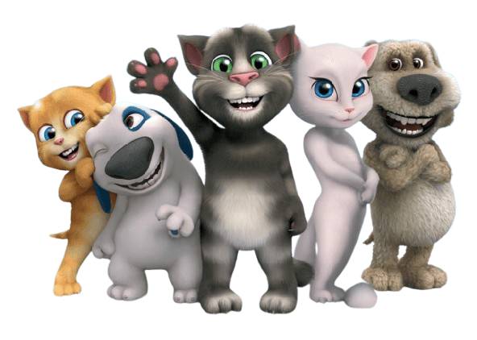

Talking Tom.
Talking Tom is a fun and interactive virtual pet loved by kids around the world. Developed by Outfit7, Talking Tom is a charming, animated cat that talks, plays, and responds to touch and voice in delightful ways. The character first appeared in the "Talking Tom Cat" app, which became an instant hit among children for its humor and engaging features. Talking Tom's animated expressions, funny sounds, and engaging activities make it more than just a virtual pet. It feels like a playful companion that kids can interact with, helping them develop social and emotional skills while having fun.Whether it's dressing Tom in silly outfits, playing adventurous mini-games, or just hearing him repeat funny words, Talking Tom is a delightful and safe entertainment choice for kids!